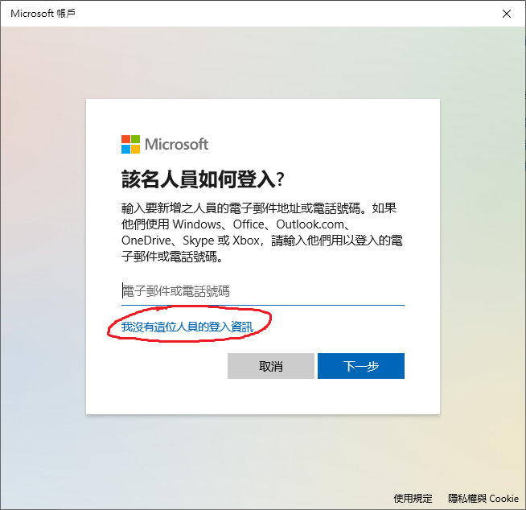
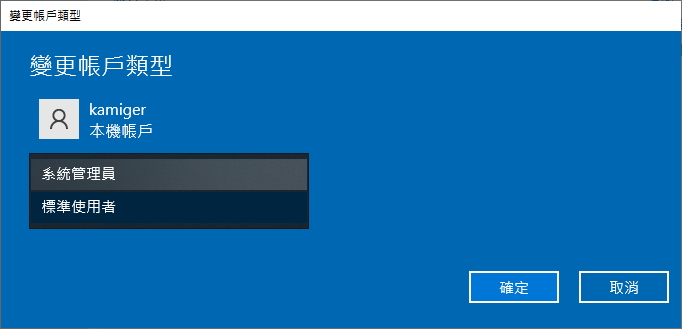

在 Windows 10 安裝 Rails 開發環境
以下安裝的軟體有相依性，請依照以下順序進行安裝：
- Visual Studio Code
- Ruby 2.7.4
- Rails 5.2.6
- Git
- Sourcetree
- PostgreSQL
注意，安裝的 Ruby 版本需為 2.7.4，而 Rails 版本需為 5.2.6，這是目前我測試過相對穩定的組合。
在開始安裝開發環境之前，首先必須確認目前登入的使用者名稱為英文。
在使用者名稱為中文的情況下，會有很多軟體在安裝時失敗，無法正確安裝。
確認使用者名稱為英文
在 Windows 圖示上點擊右鍵：

點擊設定：

點擊帳戶：

查看這個位置的顯示文字是否為英文，我的顯示卡米哥，代表我的使用者是中文名稱，無法正確安裝開發環境。
在這個狀態下，就需要新增一個使用者，使用新的使用者才能正確安裝開發環境。
建立新使用者

點擊左側的家人與其他使用者：

點擊將其他人新增至此電腦：

點擊我沒有這位人員的登入資訊：
點擊新增沒有 Microsoft 帳戶的使用者：

填寫新使用者的使用者名稱以及密碼，注意在誰會使用這部電腦？這個問題一定要填入全英文，填好之後點擊下一步：

到此已完成新使用者的建立。
設定使用者帳戶類型
點擊剛建立好的使用者：

點擊變更帳戶類型：

點選標準使用者，展開帳戶類型的下拉式選單：

點選系統管理員，將帳戶類型改為系統管理員：

點選確定：
到這裡，就可以登入新的使用者來安裝開發環境。
登入新的使用者
首先按下 Windows + L 鍵登出。
在左下角選擇新使用者登入，注意在這裡要看到新的使用者名稱為英文才行。

恭喜，接下來要安裝的是 Visual Studio Code